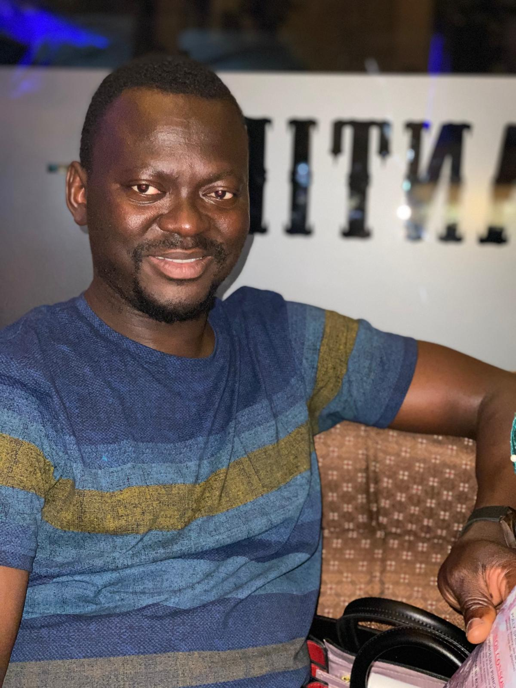
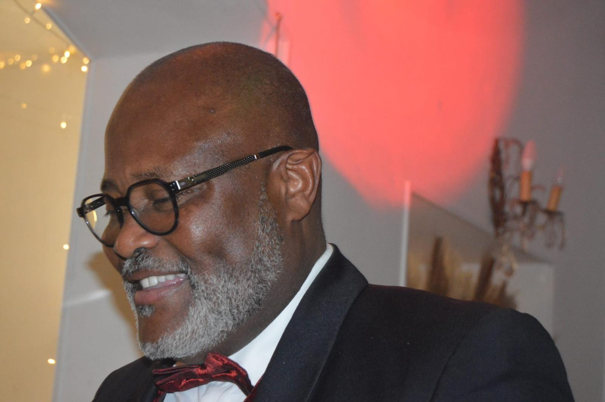
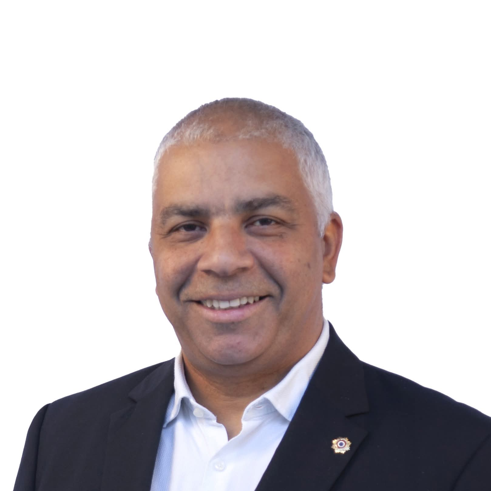
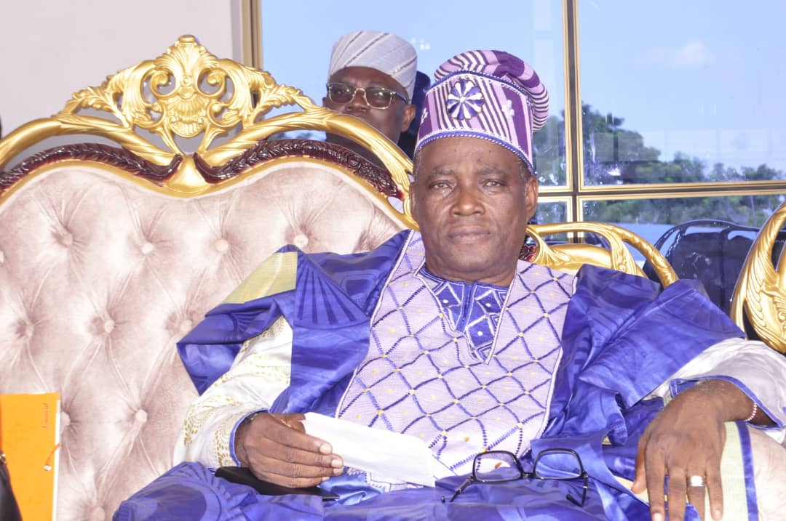

Paroles d'Acteurs
Ils portent et soutiennent la vision de Liens Culturels.

Le mot du Président
Chers visiteurs, Je suis honoré de vous accueillir sur le site de notre association, un espace où se croisent la passion de l'intérêt pour autrui, la richesse des échanges culturels et l’entraide fraternelle. Notre objectif est de renforcer les liens entre nos membres, en particulier dans les communes de Nogent-l'Artaud en France, dans les Antilles et les Caraïbes, ainsi qu’à Savè au Bénin. À travers l’organisation de voyages de découverte, nous souhaitons offrir à chacun l’opportunité d’explorer de nouveaux horizons, de découvrir des cultures variées et d’enrichir notre compréhension mutuelle. Notre engagement repose aussi sur la solidarité et le soutien aux plus démunis afin de créer une communauté plus forte, plus chaleureuse et plus solidaire. Nous vous invitons à rejoindre notre aventure, à partager vos expériences et à contribuer à faire vivre nos valeurs d’amitié, de partage et de découverte. Ensemble, construisons un pont entre les continents et les cultures, pour un monde plus uni et plus compréhensif. Bien cordialement,

Le mot du Vice-Président
Chers visiteurs et amis de Liens Culturels, Au nom de l’ensemble des membres de notre association, j’ai l’immense plaisir de vous souhaiter la bienvenue sur notre site. Notre association est née d’un idéal commun de fraternité, de solidarité et de coopération entre les communes de Nogent-l’Arthaud, en France, et Savè, au Bénin. Elle s’inscrit dans le cadre d’un jumelage porteur d’espoirs, d’échanges et de partages, au service du développement humain, culturel et social de nos deux collectivités. Ici, vous découvrirez les projets que nous portons, les valeurs qui nous animent, ainsi que les actions concrètes menées dans les domaines de l’éducation, de la culture, de la santé, de la jeunesse et du développement local. À travers chaque initiative, c’est un pont d’amitié qui se renforce entre nos peuples, une rencontre de cœurs et d’intelligences tournée vers un avenir commun. Nous vous invitons chaleureusement à parcourir ces pages, à mieux connaître notre engagement, et pourquoi pas, à y prendre part, chacun à sa manière. Encore une fois, soyez les bienvenus.
Le soutien de nos Membres d'Honneur

M. Dominique DUCLOS
Mesdames et Messieurs, chers amis, Je tiens à saluer chaleureusement la naissance de cette nouvelle association qui marque une étape importante dans le renforcement de nos liens avec la commune de Savé. C’est une très belle initiative, porteuse de projets ambitieux pour promouvoir la culture, la solidarité et l’amitié entre nos deux communes. Je suis convaincu que cette association sera un moteur pour dynamiser nos échanges, inspirer de nouvelles initiatives et favoriser une véritable coopération entre Nogent-l'Artaud et Savé. Je souhaite à tous les membres de l’association plein de succès dans cette aventure humaine et culturelle ! Avec toute mon amitié

M. Denis OBA CHABI
Message de soutien de l'honorable Dénis OBA CHABI, Maire de Savè C'est avec un grand enthousiasme que j'ai reçu la nouvelle de la création de l'Association "Liaisons culturelles", née de notre projet de jumelage avec Nogent-l'Artaud. L'union de nos deux communes, enrichie par la participation dynamique de citoyens d'autres communes béninoise et des Caraïbes, est une source de grande fierté. Cette initiative incarne parfaitement les valeurs de partage, de découverte mutuelle et de fraternité que nous chérissons. Je salue l'engagement des initiateurs et leur souhaite de belles réussites dans leurs actions pour tisser des liens forts et durables entre nos cultures. Vive l'amitié Savè - Nogent-l'Artaud et au-delà !